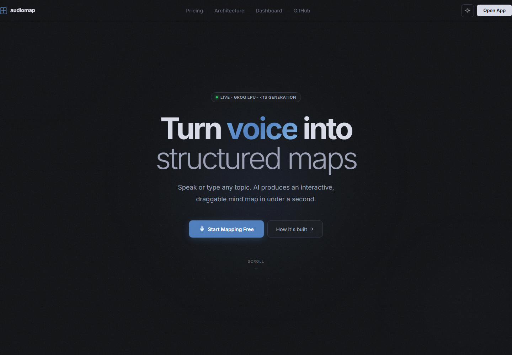
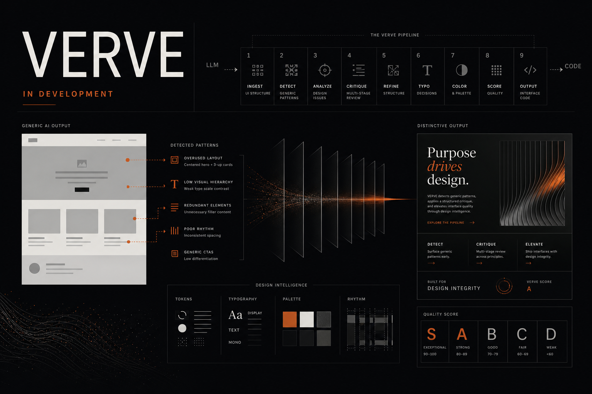
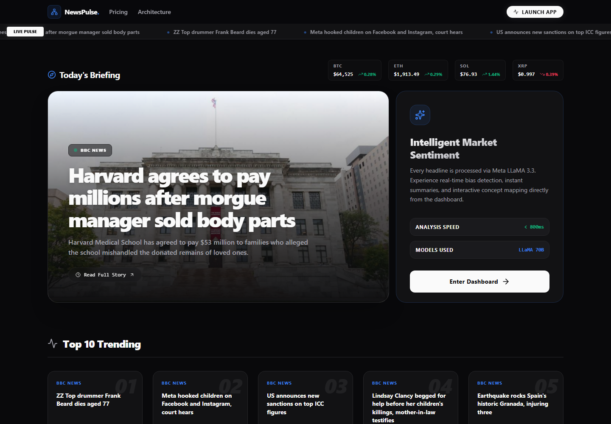
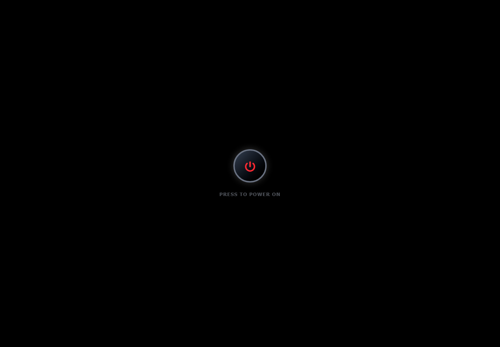
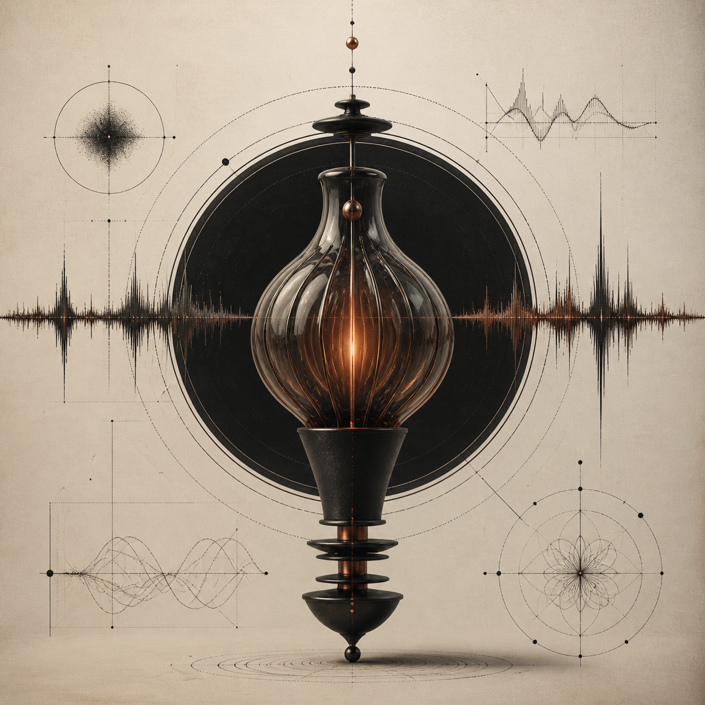

نبدأ من المشكلة، لا من شكل الواجهة.
INDEPENDENT DIGITAL STUDIO
AI · PRODUCTS · EXPERIENCES
EGYPT / WORLDWIDE
ALMOTASEMBELLAH AWWADAA/26
01POSITION / الموقف
الفكرة وحدها لا تكفي.
تحتاج إلى هوية، تجربة، وهندسة ثم سبب يجعل الناس يستخدمونها.
نحوّل القرار إلى نظام قابل للنمو.
القيمة الحقيقية تبدأ عند الاستخدام.
02SELECTED WORK / أعمال مختارة
أعمالٌ تتحدث
قبل الأدوات.
2024—26
اختيار من المنتجات والأنظمة والتجارب الرقمية. كل مشروع يبدأ بسؤال مختلف، لذلك لا يصل إلى الإجابة نفسها.

LIVE / CASE 001
001 — 2026
AUDIOMAP
يحوّل الملاحظات الصوتية أو النصوص العربية والإنجليزية إلى خرائط ذهنية تفاعلية قابلة للسحب والتصدير في أقل من ثانية، مع حفظ محلي بلا حساب.

قيد التطوير / مشروع 002
002 — 2026 / IN DEVELOPMENT
VERVE
خط معالجة مفتوح المصدر لذكاء التصميم، يقع بين نموذج اللغة والكود الناتج ليكتشف قرارات الواجهة العامة، وينقدها ويعيد توجيهها نحو أنظمة بصرية مقصودة عبر تسع وحدات متخصصة. المشروع قيد التطوير حاليًا.

LIVE / MARKET INTELLIGENCE
002 — 2026
NEWSPULSE
بوابة أخبار وأسواق لحظية تجمع RSS عالميًا، ثم تستخدم LLaMA 3.3 لتحليل المزاج السوقي واستخراج الكيانات وبناء خرائط المفاهيم.

PRESS TO POWER ON
003 — 2025
XP/OS
نظام تشغيل تفاعلي داخل المتصفح: نوافذ قابلة للسحب، CMD، Notepad، ألعاب صغيرة، مدير ملفات، أصوات وحالات تشغيل وإغلاق كاملة.

VOICE / EMOTION / BILINGUAL
004 — 2026
ARIA
رفيق صوتي عربي–إنجليزي يستجيب في زمن شبه لحظي، يتتبع المسار العاطفي للمحادثة ويغيّر صوته وإيقاعه وواجهة المنتج، مع عميل Telegram مستقل.
03CAPABILITIES / النطاق
WHAT I BUILDما الذي يمكنني
ما الذي يمكنني
أن أبنيه؟
حضور رقمي
مواقع للشركات والعلامات التجارية وتجارب تعريفية تترك أثرًا واضحًا.
↙منتجات ويب
من الفكرة وMVP إلى SaaS ومنصات وأنظمة داخلية قابلة للنمو.
↙ذكاء اصطناعي تطبيقي
ذكاء اصطناعي داخل المنتج لحل مشكلة حقيقية، لا لإضافة ملصق AI.
↙تجارب رقمية
واجهات وتجارب غير تقليدية عندما تكون الهوية نفسها جزءًا من المنتج.
↙04AA / LAB
AA/
LAB
أشياء أبنيها لأنني أردت
معرفة إن كان يمكن بناؤها.
33 PUBLIC REPOS
IDPROJECTFIELDSTATUS
26.033AUDIOMAPVOICE / AIOPEN SOURCE ↗
26.032NEWSPULSEMARKETS / AILIVE ↗
26.031ARIAVOICE / EMOTIONPROTOTYPE ↗
25.030XP / OSWEB / SYSTEMLIVE ↗
25.021IMAGE AIFLASK / HFOPEN SOURCE ↗
24.009LIBRARYJAVA / GUIARCHIVED ↗
05ABOUT / عني
ALMOTASEMBELLAH AWWAD
أفكّر كمهندس.
وأبني كصاحب منتج.
أنا المعتصم بالله عوّاد، مهندس ذكاء اصطناعي ومطوّر منتجات SaaS مستقل من مصر. أبني أنظمة تجمع الذكاء الاصطناعي التطبيقي مع هندسة الويب الحديثة، وأعمل حاليًا على منتجات صوتية ومتعددة الوسائط ومنصة Rowad.
- NAME
- ALMOTASEMBELLAH AWWAD
- DISCIPLINE
- AI ENGINEERING
- ROLE
- INDEPENDENT BUILDER
- BASE / WORK
- EGYPT / WORLDWIDE
/NOW
BUILDINGROWAD / AUDIOMAP
EXPLORINGMULTIMODAL AI SYSTEMS
ENGINEERINGVOICE / LLM / DISTRIBUTED SYSTEMS
AVAILABLESELECTED CLIENT WORK
06CONTACT / تواصل